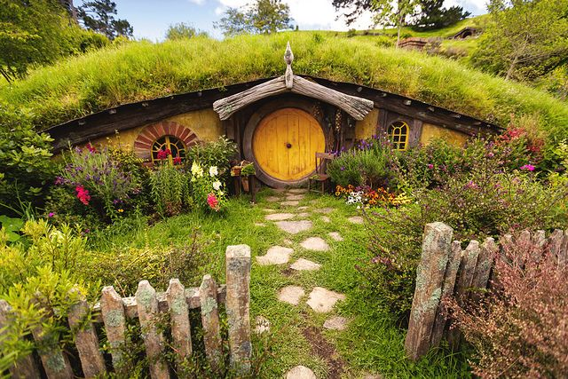

Bienvenidos a Escapada Natural
En Escapada Natural ofrecemos casas y cabañas rurales en pleno entorno de montaña, ideales para desconectar del ritmo de la ciudad. Todos nuestros alojamientos están cuidados hasta el último detalle para que solo te preocupes de disfrutar.
Organizamos actividades guiadas, rutas de senderismo, paseos en bicicleta y visitas culturales por los pueblos de la zona. Ya sea que vengas en familia, en pareja o con amigos, tenemos una escapada hecha a tu medida.

Tabla de precios
| Alojamiento | Capacidad | Precio/noche | Desayuno |
|---|---|---|---|
| Casa del Bosque | 4 personas | 90 € | Incluido |
| Cabaña del Lago | 2 personas | 75 € | Incluido |
| Casa de Montaña | 6 personas | 120 € | No incluido |